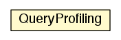

jason.profiling
Class QueryProfiling

java.lang.Object
 jason.profiling.QueryProfiling
jason.profiling.QueryProfiling
public class QueryProfiling
- extends java.lang.Object
|
Field Summary |
static float |
cqryT
|
static float |
cupdT
|
protected java.util.logging.Logger |
logger
|
static int |
nbStops
|
static float |
nT
|
static float |
pT
|
static float |
uT
|
| Methods inherited from class java.lang.Object |
clone, equals, finalize, getClass, hashCode, notify, notifyAll, toString, wait, wait, wait |
logger
protected java.util.logging.Logger logger
nbStops
public static int nbStops
nT
public static float nT
pT
public static float pT
uT
public static float uT
cqryT
public static float cqryT
cupdT
public static float cupdT
QueryProfiling
public QueryProfiling(Agent ag)
incHits
public void incHits()
queryStared
public void queryStared(Literal l)
queryFinished
public void queryFinished(Literal l,
long time)
setNbReasoningCycles
public void setNbReasoningCycles(int n)
newUpdateCycle
public void newUpdateCycle(int n,
int u,
long time)
getNbUses
public int getNbUses()
getP
public float getP()
show
public void show()